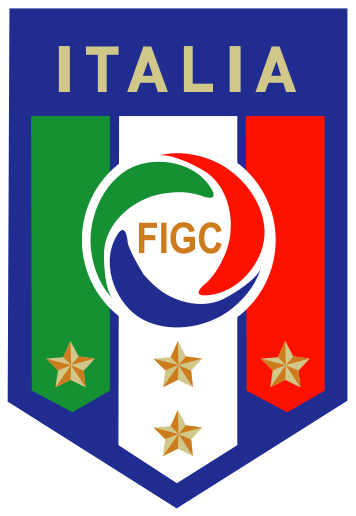

Tetracampeã mundial, a Itália tem na África do Sul a oportunidade de reaver a hegemonia do futebol mundial, perdida para o Brasil desde a Copa de 1970. Uma nova conquista da Azzurra a iguala aos brasileiros como recordista de títulos mundiais: cinco.
A exemplo do que aconteceu ao longo de toda a sua história, a Itália não apresenta uma equipe brilhante em termos de valores individuais. Depois de penar para se classificar para a Euro-2008 e de fazer feio na competição, o técnico Roberto Donadoni foi demitido e Marcello Lippi, campeão mundial em 2006, foi reconduzido ao comando.
Nas eliminatórias para a Copa do Mundo, os italianos classificaram-se sem maiores sustos, invictos no Grupo 8 (sete vitórias e três empates). A campanha na Copa das Confederações de 2009, entretanto, foi desanimadora: eliminação na primeira fase, com direito a derrota para o Egito e goleada diante do Brasil (o time de Dunga fez 3 a 0 na Azzurra).